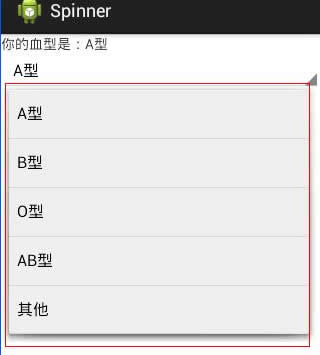

首页 > 编程笔记
Android Spinner：下拉列表控件
Spinner 提供下拉列表式的输入方式，该方法可以有效节省手机屏幕上的显示空间。
下面用一个简单的实例讲解 Spinner 的使用方法。在工程 WidgetDemo 的布局文件 main.xml 中添加一个 Button，用以启动 SpinnerActivity。
在 main.xml 中添加代码如下：
SpinnerActivity 使用的布局文件为 spiner.xml，其代码如下：
在本实例中，SpinnerActivity 在程序代码中动态建立了下拉列表每一项的内容。除此之外，还可以在 XML 文件中定义 Spinner 的下拉列表项，步骤如下。
1）在 res/values 文件夹下新建 cities.xml 文件夹：
下面用一个简单的实例讲解 Spinner 的使用方法。在工程 WidgetDemo 的布局文件 main.xml 中添加一个 Button，用以启动 SpinnerActivity。
在 main.xml 中添加代码如下：
<Button
android:id="@+id/button4"
android:layout_width="wrap_content"
android:layout_height="wrap_content"
android:text="SpinnerDemo"/>
单击 Button 并启动 SpinnerActivity 的代码如下
Button spinnerbtn = (Button) this.findViewById(R.id.button4);
spinnerbtn.setOnClickListener(new View.OnClickListener() {
@Override
public void onClick(View v) {
Intent intent = new Intent(MainActivity.this, SpinnerActivity.class);
startActivity(intent);
}
});
同时在 AndroidManifest.xml 文件中声明该 Activity：
<activity android:name=".SpinnerActivity "></activity>
SpinnerActivity 的运行效果如图 1 所示。

图 1 Spinner 的应用界面
图 1 Spinner 的应用界面
SpinnerActivity 使用的布局文件为 spiner.xml，其代码如下：
<?xml version="1.0" encoding="utf-8"?>
<LinearLayout xmlns:android="http://schemas.android.com/apk/res/android"
android:layout_width="match_parent"
android:layout_height="match_parent"
android:orientation="vertical">
<TextView
android:id="@+id/textView1"
android:layout_width="wrap_content"
android:layout_height="wrap_content"
android:text="textview"/>
<Spinner
android:id="@+id/spinner1"
android:layout_width="match_parent"
android:layout_height="wrap_content"/>
</LinearLayout>
SpinnerActivity.java 文件的代码如下：
package introduction.android.widgetDemo;
import java.util.ArrayList;
import java.util.List;
import android.app.Activity;
import android.os.Bundle;
import android.view.MotionEvent;
import android.view.View;
import android.widget.AdapterView;
import android.widget.ArrayAdapter;
import android.widget.Spinner;
import android.widget.TextView;
public class SpinnerActivity extends Activity {
private List<String> list = new ArrayList<String>();
private TextView textview;
private Spinner spinnertext;
private ArrayAdapter<String> adapter;
public void onCreate(Bundle savedlnstanceState) {
super.onCreate(savedlnstanceState);
setContentView(R.layout.spiner);
//第一步：定义下拉列表内容
list.add("A型");
list.add("B型");
list.add("O型");
list.add("AB型");
list.add("其他");
textview = (TextView) findViewByld(R.id.textViewl);
spinnertext = (Spinner) findViewByld(R.id.spinnerl);
//第二步：为下拉列表定义一个适配器
adapter = new ArrayAdapter<String>(this, android.R.layout.simple_spinner_item, list);
//第三步：设置下拉列表下拉时的菜单样式
adapter.setDropDownViewResource(android.R.layout.simple_spinner_dropdown_item);
//第四步：将适配器添加到下拉列表上
spinnertext.setAdapter(adapter);
//第五步：添加监听器，为下拉列表设置事件的响应
spinnertext.setOnltemSelectedListener(new Spinner.OnltemSelectedListener() {
public void onltemSelected(AdapterView<?> argO, View argl, int arg2, long arg3) {
// TODO Auto-generated method stub
/* 将所选spinnertext的值带入myTextView中*/
textview.setText("你的血型是:" + adapter.getItem(arg2));
/* 将 spinnertext 显示^*/
argO.setVisibility(View.VISIBLE);
}
public void onNothingSelected(AdapterView<?> argO) {
// TODO Auto-generated method stub
textview.setText("NONE");
argO.setVisibility(View.VISIBLE);
}
});
//将spinnertext添加到OnTouchListener对内容选项触屏事件处理
spinnertext.setOnTouchListener(new Spinner.OnTouchListener() {
@Override
public boolean onTouch(View v, MotionEvent event) {
// TODO Auto-generated method stub
// 将mySpinner隐藏
v.setVisibility(View.INVISIBLE);
Log.i("spinner", "Spinner Touch事件被触发!");
return false;
}
});
//焦点改变事件处理
spinnertext.setOnFocusChangeListener(new Spinner.OnFocusChangeListener() {
public void onFocusChange(View v, boolean hasFocus) {
// TODO Auto-generated method stub
v.setVisibility(View.VISIBLE);
Log.i("spinner", "Spinner FocusChange事件被触发！");
}
});
}
}
SpinnerActivity 通过 5 个步骤将 Spinner 初始化并进行事件处理，分别为：
- 定义下拉列表的列表项内容 List<String>。
- 为下拉列表 Spinner 定义一个适配器 ArrayAdapter<String> ，并与列表项内容相关联。
- 使用 ArrayAdapter.setDropDownViewResource() 设置 Spinner 下拉列表在打开时的下拉菜单样式。
- 使用 Spinner. setAdapter() 将适配器数据与 Spinner 关联起来。
- 为 Spinner 添加事件监听器，进行事件处理。
在本实例中，SpinnerActivity 在程序代码中动态建立了下拉列表每一项的内容。除此之外，还可以在 XML 文件中定义 Spinner 的下拉列表项，步骤如下。
1）在 res/values 文件夹下新建 cities.xml 文件夹：
<?xml version="1.0" encoding="utf-8"?>
<resources>
<string-array name="city">
<item>A型</item>
<item>B型</item>
<item>AB型</item>
<item>O型</item>
<item>其他</item>
</string-array>
</resources>
2）在 SpinnerActivity.java 中初始化 Spinner：
Spinner spinner=(Spinner)findViewById(R.id.spinner1); ArrayAdapter<CharSequence> adapter=ArrayAdapter.createF romResource(this, R.array.city,android.R.layout.simple_spinner_item); adapter.setDropDownViewResource (android.R.layout.simple_spinner_dropdown_item); spinner.setAdapter(adapter);
关注公众号「站长严长生」，在手机上阅读所有教程，随时随地都能学习。内含一款搜索神器，免费下载全网书籍和视频。

微信扫码关注公众号